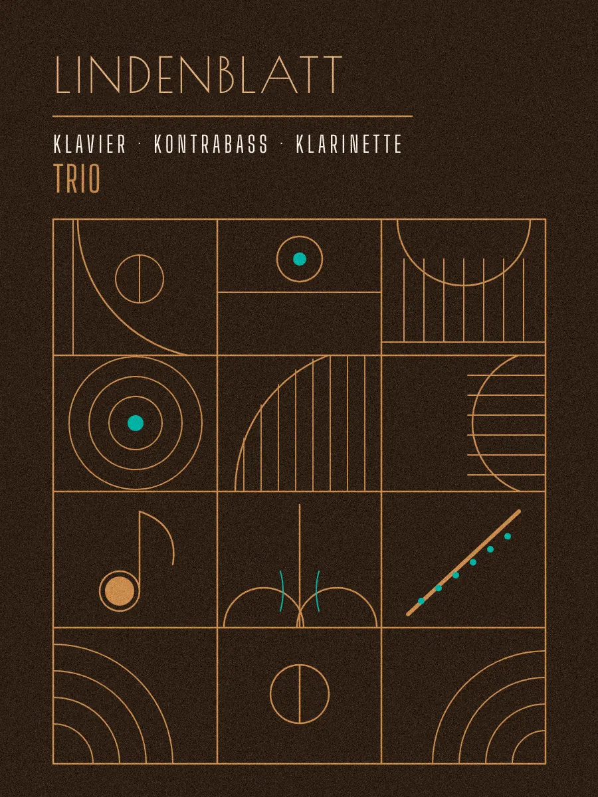

Margarete Lindqvist
Autorin aus Hamburg-Eilbek, schreibt Romane über die Zwanzigerjahre. Lebt mit Windhündin Fritzi, die bei jeder Lesung in der ersten Reihe liegt.
Vier Stunden Salon, gut verteilt: Wir lesen, wir hören zu, wir gehen zwischendurch Gassi. Die Zeiten passen auch für junge und ältere Hunde.

Autorin aus Hamburg-Eilbek, schreibt Romane über die Zwanzigerjahre. Lebt mit Windhündin Fritzi, die bei jeder Lesung in der ersten Reihe liegt.
Ida Krüger am Klavier, Lotte Hansen am Kontrabass und Malik Osei an der Klarinette. Gemeinsam spielen sie seit 2019 leisen Salon-Swing.
Theo moderiert, seine Schwester Jule ist Hundetrainerin und achtet darauf, dass sich alle Vierbeiner wohlfühlen.
Die Musik bleibt unter 75 Dezibel, und es gibt kein Schlagzeug. Nach spätestens 40 Minuten folgt eine Pause. Statt zu klatschen, applaudieren wir mit erhobenen Händen.
An der Wassernapf-Bar steht immer frisches Wasser bereit. Die Kuschelloge ist abgedunkelt und mit Decken ausgelegt, dort darf jeder Hund in Ruhe schlafen.